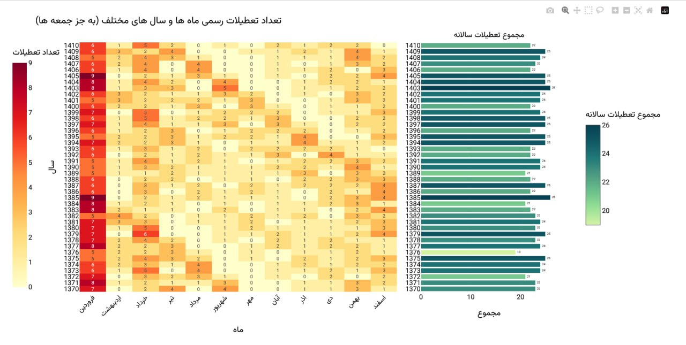
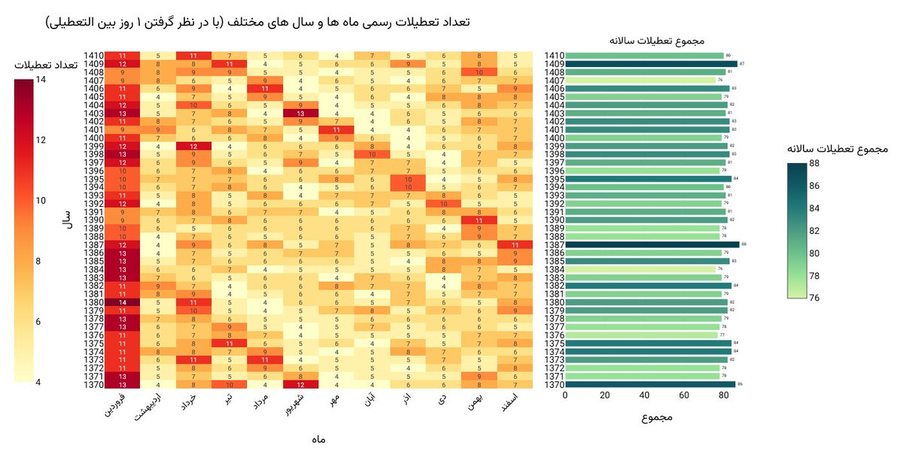

برام جالب بود بدونم در طول سالها و ماههای مختلف، چه تعداد تعطیلی رسمی (بهجز جمعه) داشتیم. نمودار زیر مربوط به سالهای ۱۳۷۰ تا ۱۴۱۰ است.

اینکه سالهای آینده هم توی نمودار هست به این خاطره که تعطیلیهای رسمی از قبل مشخصن — هم مناسبتهای شمسی، هم قمری که هر سال حدود ۱۱ روز عقب میره و همین باعث میشه توزیعشون روی ماهها بچرخه.
حالا یه حالت دیگه هم هست. اگر بینالتعطیلی رو هم حساب کنیم — مثلاً یکشنبه تعطیل باشه و جمعه هم که تعطیله، پس عملاً سه روز تعطیلی داریم — نمودار این شکلی میشه:

این کار را اول در کانال تلگرام و توییت گذاشتم؛ این نوشته همان است، کمی کاملتر.
nb.neighbours()
| title | date | |
|---|---|---|
| prev | کدام شامپو واقعاً بهصرفه است؟ | ۱۴۰۳/۰۴ |
| next | اسنپ بهینه، این بار با یک رابط کاربری درستوحسابی | ۱۴۰۳/۰۹ |